토목기사 (2022-04-24 기출문제)
1과목: 응용역학
1. 그림과 같이 이축응력을 받고 있는 요소의 체적변형률은? (단, 탄성계수(E)는 2×105 MPa, 푸아송 비(ν)는 0.3이다.)
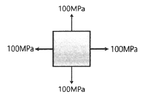
- 2.7×10-4
- 3.0×10-4
- 3.7×10-4
- 4.0×10-4
(정답률: 70%)

2. 그림과 같은 단면의 상승모멘트(Ixy)는?
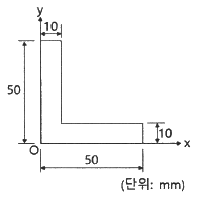
- 77500 mm4
- 92500 mm4
- 122500 mm4
- 157500 mm4
(정답률: 68%)
3. 그림과 같이 봉에 작용하는 힘들에 의한 봉 전체의 수직 처짐의 크기는?
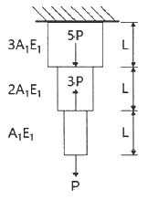
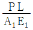
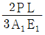
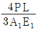
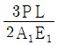
(정답률: 45%)
4. 그림과 같은 구조물의 BD 부재에 작용하는 힘의 크기는?
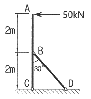
- 100 kN
- 125 kN
- 150 kN
- 200 kN
(정답률: 60%)
5. 그림과 같은 와렌(warren) 트러스에서 부재력이 '0(영)'인 부재는 몇 개인가?
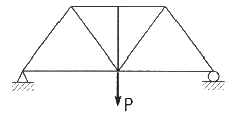
- 0개
- 1개
- 2개
- 3개
(정답률: 45%)
6. 전단응력도에 대한 설명으로 틀린 것은?
- 직사각형 단면에서는 중앙부의 전단응력도가 제일크다.
- 원형 단면에서는 중앙부의 전단응력도가 제일 크다.
- I형 단면에서는 상, 하단의 전단응력도가 제일 크다.
- 전단응력도는 전단력의 크기에 비례한다.
(정답률: 44%)
7. 그림과 같은 2경간 연속보에 등분포 하중 w = 4kN/m가 작용할 때 전단력이 “0”이 되는 위치는 지점 A로부터 얼마의 거리(x)에 있는가?
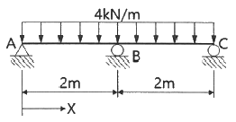
- 0.75m
- 0.85m
- 0.95m
- 1.⑤m
(정답률: 56%)
8. 그림과 같은 3힌지 아치의 중간 힌지에 수평하중 P가 작용할 때 A지점의 수직반력(VA)과 수평 반력(HA)은?
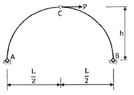
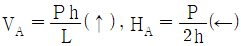
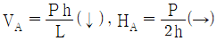
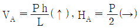
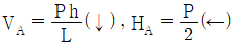
(정답률: 50%)
9. 그림과 같이 단순지지된 보에 등분포하중 q가 작용하고 있다. 지점 C의 부모멘트와 보의 중앙에 발생하는 정모멘트의 크기를 같게하여 등분포하중 q의 크기를 제한하려고 한다. 지점 C와 D는 보의 대칭거동을 유지하기 위하여 각각 A와 B로부터 같은 거리에 배치하고자 한다. 이때 보의 A점으로부터 지점 C까지의 거리(X)는?
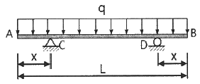
- 0.207 L
- 0.250 L
- 0.333 L
- 0.444 L
(정답률: 59%)
10. 탄성 변형에너지(Elastic Strain Energy)에 대한 설명으로 틀린 것은?
- 변형에너지는 내적인 일이다.
- 외부하중에 의한 일은 변형에너지와 같다.
- 변형에너지는 강성도가 클수록 크다
- 하중을 제거하면 회복될 수 있는 에너지이다.
(정답률: 64%)
11. 그림에서 중앙점(C점)의 휨모멘트(Mc)는?
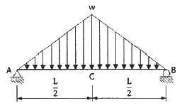
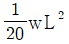
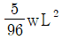
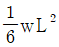
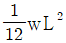
(정답률: 63%)
12. 단면이 200mm × 300mm인 압축부재가 있다. 부재의 길이가 2.9m일 때 이 압축부재의 세장비는 약 얼마인가? (단, 지지상태는 양단 힌지이다.)
- 33
- 50
- 60
- 100
(정답률: 57%)
13. 그림과 같이 한 변이 a인 정사각형 단면의 1/4 을 절취한 나머지 부분의 도심(C)의 위치(yo)는?
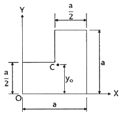
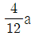
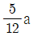
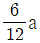
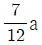
(정답률: 63%)
14. 그림과 같은 구조물에서 하중이 작용하는 위치에서 일어나는 처짐의 크기는?
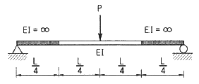
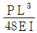
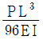
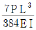
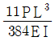
(정답률: 56%)
15. 그림과 같은 게르버 보에서 A점의 반력은?
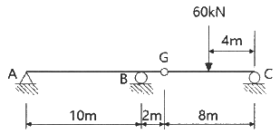
- 6kN(↓)
- 6kN(↑)
- 30kN(↓)
- 30kN(↑)
(정답률: 41%)
16. 그림과 같은 부정정보의 A단에 작용하는 휨모멘트는?
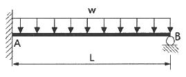
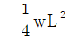
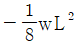
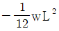
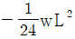
(정답률: 50%)
17. 그림과 같이 단순보에 이동하중이 작용할 때 절대최대휨모멘트는?
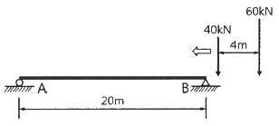
- 387.2 kN·m
- 423.2 kN·m
- 478.4 kN·m
- 531.7 kN·m
(정답률: 43%)
18. 그림과 같은 내민보에서 A점의 처짐은? (단, I = 1.6×108 mm4, E = 2.0×105 MPa 이다.)
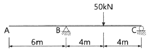
- 22.5 mm
- 27.5 mm
- 32.5 mm
- 37.5 mm
(정답률: 31%)
19. 그림과 같이 연결부에 두 힘 50kN과 20kN이 작용한다. 평형을 이루기 위한 두 힘 A와 B의 크기는?
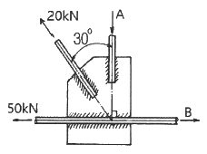
- A = 10 kN, B = 50 + √3 kN
- A = 50 + √3 kN, B = 10 kN
- A = 10√3 kN, B = 60 kN
- A = 60 kN, B = 10√3 kN
(정답률: 59%)
20. 바닥은 고정, 상단은 자유로운 기둥의 좌굴 형상이 그림과 같을 때 임계하중은?
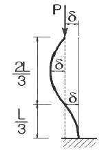
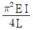
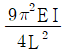
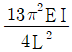
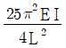
(정답률: 60%)
2과목: 측량학
21. 다음 중 완화곡선의 종류가 아닌 것은?
- 렘니스케이트 곡선
- 클로소이드 곡선
- 3차 포물선
- 배향 곡선
(정답률: 57%)
22. 그림과 같이 교호수준측량을 실시한 결과가 a1 = 0.63m, a2 = 1.25m, b1 = 1.15m, b2 = 1.73m 이었다면, B점의 표고는? (단, A의 표고 = 50.00m)
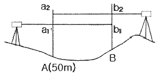
- 49.50m
- 50.00m
- 50.50m
- 51.00m
(정답률: 54%)
23. 수심 h인 하천의 수면으로부터 0.2h, 0.4h, 0.6h, 0.8h 인 곳에서 각각의 유속을 측정하여 0.562m/s, 0.521m/s, 0.497m/s, 0.364m/s의 결과를 얻었다면 3점법을 이용한 평균유속은?
- 0.474 m/s
- 0.480 m/s
- 0.486 m/s
- 0.492 m/s
(정답률: 50%)
24. GNSS 다중주파수(multi-frequency)를 채택하고 있는 가장 큰 이유는?
- 데이터 취득 속도의 향상을 위해
- 대류권지연 효과를 제거하기 위해
- 다중경로오차를 제거하기 위해
- 전리층지연 효과의 제거를 위해
(정답률: 60%)
25. 측점간의 시통이 불필요하고 24시간 상시 높은 정밀도로 3차원 위치측정이 가능하며, 실시간 측정이 가능하여 항법용으로도 활영되는 측량방법은?
- NNSS 측량
- GNSS 측량
- VLBI 측량
- 토털스테이션 측량
(정답률: 54%)
26. 어떤 측선의 길이를 관측하여 다음 표와 같은 결과를 얻었다면 최학값은?
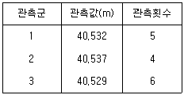
- 40.530m
- 40.531m
- 40.532m
- 40.533m
(정답률: 56%)
27. 그림과 같은 구역을 심프슨 제1법칙으로 구한 면적은? (단, 각 구간의 지거는 1m로 동일하다.)
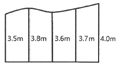
- 14.20 m2
- 14.90 m2
- 15.50 m2
- 16.00 m2
(정답률: 60%)
28. 단곡선을 설치할 때 곡선반지름이 250m, 교각이 116°23′, 곡선시점까지의 추가거리가 1146m 일 때 시단현의 편각은? (단, 중심말뚝 간격=20m)
- 0° 41′ 15″
- 1° 15′ 36″
- 1° 36′ 15″
- 2° 54′ 51″
(정답률: 35%)
29. 그림과 같은 트레버스에서 AL의 방위각이 29° 40′ 15″, BM의 방위각이 320° 27′ 12″, 교각의 총합이 1190° 47′ 32″ 일 때 각관측 오차는?
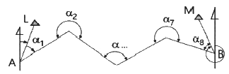
- 45″
- 35″
- 25″
- 15″
(정답률: 49%)
30. 지형측량을 할 때 기본 삼각점만으로는 기준점이 부족하여 추가로 설치하는 기준점은?
- 방향전환점
- 도근점
- 이기점
- 중간점
(정답률: 66%)
31. 지구반지름이 6370km 이고 거리의 허용오차가 1/105 이면 평면측량으로 볼 수 있는 범위의 지름은?
- 약 69km
- 약 64km
- 약 36km
- 약 22km
(정답률: 45%)
32. 그림과 같은 수준망을 각각의 환에 따라 폐합오차를 구한 결과가 표와 같고 폐합오차의 한계가 ±1.0√S cm 일 때 우선적으로 제 관측할 필요가 있는 노선은? (단, S : 거리[km])
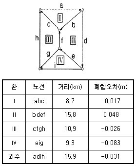
- e노선
- f노선
- g노선
- h노선
(정답률: 54%)
33. 수준측량에서 발생하는 오차에 대한 설명으로 틀린 것은?
- 기계의 조정에 의해 발생하는 오차는 전시와 후시의 거리를 같게 하여 소거할 수 있다.
- 삼각수준측량은 대지역을 대상으로 하기 때문에 곡률오차와 굴절오차는 그 양이 상쇄되어 고려하지 않는다.
- 표척의 영눈금 오차는 출발점의 표척을 도착점에서 사용하여 소거할 수 있다.
- 기포의 수평조정이나 표척면의 읽기는 육안으로 한계가 있으나 이로 인한 오차는 일반적으로 허용오차 범위 안에 들 수 있다.
(정답률: 52%)
34. 그림과 같은 관측결과 θ = 30° 11′ 00″, S = 1000m 일 때 C점의 X좌표는? (단, AB의 방위각 = 89° 49′ 00″, A점의 X좌표 = 1200m)
- 700.00m
- 1203.20m
- 2064.42m
- 2066.03m
(정답률: 35%)
35. 그림과 같은 복곡선에서 t1 + t2 의 값은?
(정답률: 59%)
36. 노선 설치 방법 중 좌표법에 의한 설치방법에 대한 설명으로 틀린 것은?
- 토탈스테이션, GPS 등과 같은 장비를 이용하여 측점을 위치시킬 수 있다.
- 좌표법에 의한 노선의 설치는 다른 방법보다 지형의 굴곡이나 시통 등의 문제가 적다.
- 좌표법은 평면곡선 및 종단곡선의 설치요소를 동시에 위치시킬 수 있다.
- 평면적인 위치의 측설을 수행하고 지형표고를 관측하여 종단면도를 작성할 수 있다.
(정답률: 35%)
37. 다각측량에서 각 측량의 기계적 오차 중 시준축과 수평축이 직교하지 않아 발생하는 오차를 처리하는 방법으로 옳은 것은?
- 망원경을 정위와 반위로 측정하여 평균값을 취한다.
- 배각법으로 관측을 한다.
- 방향각법으로 관측을 한다.
- 편심관측을 하여 귀심계산을 한다.
(정답률: 43%)
38. 30m당 0.03m가 짧은 줄자를 사용하여 정사각형 토지와 한 변을 측정한 결과 150m이었다면 면적에 대한 오차는?
- 41 m2
- 43 m2
- 45 m2
- 47 m2
(정답률: 50%)
39. 지성선에 관한 설명으로 옳지 않은 것은?
- 철(凸)선은 능선 또는 분수선이라고 한다.
- 경사변환선이란 동일 방향의 경사면에서 경사의 크기가 다른 두 면의 접합선이다.
- 요(凹)선은 지표의 경사가 최대로 되는 방향을 표시한 선으로 유하선이라고 한다.
- 지성선은 지표면이 다수의 평면으로 구성되었다고 할 때 평면간 접합부, 즉 접선을 말하며 지세선이라고도 한다.
(정답률: 63%)
40. 그림과 같은 지형에서 각 등고선에 쌓인 부분의 면적이 표와 같을 때 각주공식에 의한 토량은? (단, 윗면은 평평한 것으로 가정한다.)
- 11400 m3
- 22800 m3
- 33800 m3
- 38000 m3
(정답률: 35%)
3과목: 수리학 및 수문학
41. 2개의 불투수층 사이에 있는 대수층 두께 a, 투수계수 k 인 곳에 반지름 r0 인 굴착정(artesian well)을 설치하고 일정 양수량 Q를 양수하였더니, 양수 전 굴착정 내의 수위 H가 h0 로 강하하여 정상흐름이 되었다. 굴착정의 영향원 반지름을 R이라 할 때 (H-h0)의 값은?
(정답률: 50%)
42. 침투능(infilration capacity)에 관한 설명으로 틀린 것은?
- 침투능은 토양조건과는 무관하다
- 침투능은 강우강도에 따라 변화한다.
- 일반적으로 단위는 mm/h 또는 in/h로 표시된다.
- 어떤 토양면을 통해 물이 침투할 수 있는 최대율을 말한다.
(정답률: 55%)
43. 3차원 흐름의 연속방정식을 아래와 같은 형태로 나타낼 때 이에 알맞은 흐름의 상태는?
- 압축성 부정류
- 압축성 정상류
- 비압축성 부정류
- 비압축성 정상류
(정답률: 43%)
44. 지름 20cm의 원형단면 관수로에 물이 가득차서 흐를 때의 동수반경은?
- 5cm
- 10cm
- 15cm
- 20cm
(정답률: 47%)
45. 대수층의 두께 2.3m, 폭 1.0m일 때 지하수 유량은? (단, 지하수류의 상·하류 두 지점 사이의 수두차 1.6m, 두 지점 사이의 평균거리 360m, 투수계수 k=192m/day)
- 1.53 m3/day
- 1.80 m3/day
- 1.96 m3/day
- 2.21 m3/day
(정답률: 50%)
46. 그림과 같은 수조 벽면에 작은 구멍을 뚫고 구멍의 중심에서 수면까지 높이가 h일 때, 유출속도 V는? (단, 에너지 손실은 무시한다.)
- 2gh
- gh
(정답률: 54%)
47. 그림과 같이 원형관 중심에서 V의 유속으로 물이 흐르는 경우에 대한 설명으로 틀린 것은? (단, 흐름은 층류로 가정한다.)
- 지점 A에서의 마찰력은 V2에 비례한다.
- 지점 A에서의 유속은 단면 평균유속의 2배다.
- 지점 A에서 지점 B로 갈수록 마찰력은 커진다.
- 유속은 지점 A에서 최대인 포물선 분포를 한다.
(정답률: 42%)
48. 어떤 유역에 다음 표와 같이 30분간 집중호우가 계속 되었을 때, 지속기간 15분인 최대강우강도는?
- 64 mm/h
- 48 mm/h
- 72 mm/h
- 80 mm/h
(정답률: 49%)
49. 정지하고 있는 수중에 작용하는 정수압의 성질로 옳지 않은 것은?
- 정수압의 크기는 깊이에 비레한다.
- 정수압은 물체의 면에 수직으로 작용한다.
- 정수압은 단위면적에 작용하는 힘의 크기로 나타낸다.
- 한 점에 작용하는 정수압은 방향에 따라 크기가 다르다.
(정답률: 32%)
50. 단위유량도에 대한 설명으로 틀린 것은?
- 단위유량도의 정의에서 특정 단위시간은 1시간을 의미한다.
- 일정기저시간가정, 비레가정, 중첩가정은 단위유량도의 3대 기본가정이다.
- 단위유량도의 정의에서 단위 유효우량은 유역 전 면적 상의 등가우량 깊이로 측정되는 특정량의 우량을 의미한다.
- 단위 유효우량은 유출량의 형태로 단위유량도상에 표시되며, 단위유량도 아래의 면적은 부피의 차원을 가진다.
(정답률: 33%)
51. 한계수심에 대한 설명으로 옳지 않은 것은?
- 유량이 일정할 때 한계수심에서 비에너지가 최소가 된다.
- 직사각형 단면 수로의 한계수심은 최소 비에너지의 2/3 이다.
- 비에너지가 일정하면 한계수심으로 흐를 때 유량이 최대가 된다.
- 한계수심보다 수심이 작은 흐름이다 상류(常流)이고 큰 흐름이 사류(射流)이다.
(정답률: 44%)
52. 개수로 흐름의 도수현상에 대한 설명으로 틀린 것은?
- 비력과 비에너지가 최소인 수심은 근사적으로 같다.
- 도수 전·후의 수심 관계는 베르누이 정리로부터 구할 수 있다.
- 도수는 흐름이 사류에서 상류로 바뀔 경우에만 발생 된다.
- 도수 전·후의 에너지 손실은 주로 불연속 수면 발생 때문이다.
(정답률: 27%)
53. 단면 2m×2m, 높이 6m인 수조에 물이 가득 차 있을 때 이 수조의 바닥에 설치한 지름이 20cm인 오리피스로 배수시키고자 한다. 수심이 2m가 될 때까지 배수하는데 필요한 시간은? (단, 오리피스 유량계수 C=0.6, 중력가속도 g=9.8m/s2)
- 1분 39초
- 2분 36초
- 2분 55초
- 3분 45초
(정답률: 27%)
54. 정상류에 관한 설명으로 옳지 않은 것은?
- 유선과 유적선이 일치한다.
- 흐름의 상태가 시간에 따라 변하지 않고 일정하다.
- 실제 개수로 내 흐름의 상태는 정상류가 대부분이다.
- 정상류 흐름의 연속방정식은 질량보존의 법칙으로 설명된다.
(정답률: 46%)
55. 수로의 단위폭에 대한 운동량 방정식은? (단, 수로의 경사는 완만하며, 바닥 마찰저항은 무시한다.)
(정답률: 46%)
56. 완경사 수로에서 배수곡선(backwater curve)에 해당하는 수면곡선은?
- 홍수 시 하천의 수면곡선
- 댐을 월류할 때의 수면곡선
- 하천 단락부(段落部) 상류의 수면곡선
- 상류 상태로 흐르는 하천에 댐을 구축했을 때 저수지 상류의 수면곡선
(정답률: 40%)
57. 지하수의 연직분포를 크게 통기대와 포화대로 나눌 때, 통기대에 속하지 않는 것은?
- 모관수대
- 중간수대
- 지하수대
- 토양수대
(정답률: 49%)
58. 하천의 수리모형실험에 주로 사용되는 상사법칙은?
- Weber의 상사법칙
- Cauchy의 상사법칙
- Froude의 상사법칙
- Reynolds의 상사법칙
(정답률: 49%)
59. 속도분포를 으로 나타낼 수 있을 때 바닥면에서 0.5m 떨어진 높이에서의 속도경사(Velocity gradient)는? (단, v : m/sec, y : m)
- 2.67 sec-1
- 3.36 sec-1
- 2.67 sec-2
- 3.36 sec-2
(정답률: 36%)
60. 수중에 잠겨 있는 곡면에 작용하는 연직분력은?
- 곡면에 의해 배제된 물의 무게와 같다.
- 곡면중심의 압력에 물의 무게를 더한 값이다.
- 곡면을 밀면으로 하는 물기둥의 무게와 같다.
- 곡면을 연직면상에 투영했을 때 그 투영면이 작용하는 정수압과 같다.
(정답률: 39%)
4과목: 철근콘크리트 및 강구조
61. 프리텐션 PSC부재의 단면적이 200000 mm2 인 콘크리트 도심에 PS강선을 배치하여 초기의 긴장력(Pi)을 800kN 가하였다. 콘크리트의 탄성변형에 의한 프리스트레스의 감소량은? (단, 탄성계수비(n)은 6이다.)
- 12 MPa
- 18 MPa
- 20 MPa
- 24 MPa
(정답률: 22%)
62. 경간이 8m인 단순 지지된 프리스트레스트 콘크리트 보에서 등분포하중(고정하중과 활하중의 합)이 w=40kN/m 작용할 때 중앙 단면 콘크리트 하연에서의 응력이 0이 되려면 PS강재에 작용되어야 할 프리스트레스 힘(P)은? (단, PS강재는 단면 중심에 배치되어 있다.)
- 1250 kN
- 1880 kN
- 2650 kN
- 3840 kN
(정답률: 30%)
63. 아래 그림과 같은 직사각형 단면의 단순보에 PS강재가 포물선으로 배치되어 있다. 보의 중앙단면에서 일어나는 상연응력(㉠) 및 하연응력(㉡)은? (단, PS강재의 긴장력은 3300kN 이고, 자중을 포함한 작용하중은 27kN/m 이다.)
- ㉠ : 21.21 MPa, ㉡ : 1.8 MPa
- ㉠ : 12.07 MPa, ㉡ : 0 MPa
- ㉠ : 11.11 MPa, ㉡ : 3.00 MPa
- ㉠ : 8.6 MPa, ㉡ : 2.45 MPa
(정답률: 49%)
64. 2방향 슬래브 설계 시 직접설계법을 적용하기 위해 만족하여야 하는 사항으로 틀린 것은?
- 각 방향으로 3경간 이상이 연속되어야 한다.
- 슬래브 판들은 단변 경간에 대한 장변 경간의 비가 2 이하인 직사각형이어야 한다.
- 각 방향으로 연속한 받침부 중심간 경간차이는 긴 경간의 1/3 이하이어야 한다.
- 연속한 기둥 중심선을 기준으로 기둥의 어긋남은 그 방향 경간의 20% 이하이어야 한다.
(정답률: 63%)
65. 옹벽의 설계 및 구조해석에 대한 설명으로 틀린 것은?
- 지반에 유발되는 최대 지반반력은 지반의 허용지지력을 초과할 수 없다.
- 전도에 대한 저항휨모멘트는 횡토압에 의한 전도모멘트의 1.5배 이상이어야 한다.
- 저판의 뒷굽판은 정확한 방법이 사용되지 않는 한, 뒷굽판 상부에 재하되는 모든 하중을 지지하도록 설계하여야 한다.
- 캔틸레버식 옹벽의 저판은 전면벽과의 접합부를 고정단으로 간주한 켄틸레버로 가정하여 단면을 설계할 수 있다.
(정답률: 49%)
66. 그림과 같은 띠철근 기둥에서 띠철근의 최대 수직간격은? (단, D10의 공칭직경은 9.5mm, D32의 공칭직경은 31.8mm이다.)
- 400mm
- 456mm
- 500mm
- 509mm
(정답률: 52%)
67. 강구조의 특징에 대한 설명으로 틀린 것은?
- 소성변형능력이 우수하다.
- 재료가 균질하여 좌굴의 영향이 낮다.
- 인성이 커서 연성파괴를 유도할 수 있다.
- 단위면적당 강도가 커서 자중을 줄일 수 있다.
(정답률: 38%)
68. 콘크리트와 철근이 일체가 되어 외력에 저항하는 철근콘크리트 구조에 대한 설명으로 틀린 것은?
- 콘크리트와 철근의 부착강도가 크다.
- 콘크리트와 철근의 탄성계수는 거의 같다.
- 콘크리트 속에 묻힌 철근은 거의 부식하지 않는다.
- 콘크리트와 철근의 열에 대한 팽창계수는 거의 같다.
(정답률: 61%)
69. 폭이 300mm, 유효깊이가 500mm인 단철근 직사각형 보에서 인장철근 단면적이 1700mm2 일 때 강도설계법에 의한 등가직사각형 압축응력블록의 깊이(a)는? (단, fck = 20MPa, fy = 300MPa 이다.)
- 50mm
- 100mm
- 200mm
- 400mm
(정답률: 34%)
70. 아래에서 설명하는 용어는?
- 플랫 플레이트
- 플랫 슬래브
- 리브 쉘
- 주열대
(정답률: 50%)
71. 그림과 같은 L형강에서 인장응력 검토를 위한 순폭계산에 대한 설명으로 틀린 것은?
- 전개된 총 폭(b) = b1 + b2 - t 이다.
- 리벳선간 거리(g) = g1 - t 이다.
- 인 경우 순폭(bn) = b – d 이다.
- 인 경우 순폭(bn) = 이다.
(정답률: 54%)
72. 단변 : 장변 경간의 비가 1 : 2인 단순 지지된 2방향 슬래브의 중앙점에 집중하중 P가 작용할 때 단변과 장변이 부담하는 하중비(PS : PL)는? (단, PS : 단변이 부담하는 하중, PL : 장변이 부담하는 하중)
- 1 : 8
- 8 : 1
- 1 : 16
- 16 : 1
(정답률: 60%)
73. 보통중량콘크리트에서 압축을 받는 이형철근 D29(공칭지름 28.6mm)를 정착시키기 위해 소요되는 기본정착길이(lab)는? (단, fck = 35MPa, fy = 400MPa 이다.)
- 491.92 mm
- 483.43 mm
- 464.09 mm
- 450.38 mm
(정답률: 41%)
74. 철근콘크리트 부재의 전단철근에 대한 설명으로 틀린 것은?
- 전단철근의 설계기준항복강도는 300MPa을 초과할 수 없다.
- 주인장 철근에 30° 이상의 각도로 구부린 굽힘철근은 전단철근으로 사용할 수 있다.
- 최소 전단철근량은 보다 작지 않아야 한다.
- 부재축에 직각으로 배치된 전단철근의 간격은 d/2 이하, 또한 600mm 이하로 하여야 한다.
(정답률: 35%)
75. 폭 350mm, 유효깊이 500mm인 보에 설계기준항복강도 가 400MPa인 D13 철근을 인장 주철근에 대한 경사각(α)이 60° 인 U형 경사 스터럽으로 설치했을 때 전단보강철근의 공칭강도(Vs)는? (단, 스터럽 간격 s=250mm, D13 철근 1본의 단면적은 127mm2 이다.)
- 201.4 kN
- 212.7 kN
- 243.2 kN
- 277.6 kN
(정답률: 22%)
76. 철근콘크리트 보를 설계할 때 변화구간 단면에서 강도감소계수(ø)를 구하는 식은? (단, fck = 40MPa, fy = 400MPa, 띠철근으로 보강된 부재이며, εt는 최외단 인장철근의 순인장변형률이다.)
(정답률: 50%)
77. 그림과 같이 지름 25mm의 구멍이 있는 판(plate)에서 인장응력 검토를 위한 순폭은?
- 160.4 mm
- 150 mm
- 145.8 mm
- 130 mm
(정답률: 33%)
78. 폭이 350mm, 유효깊이가 550mm인 직사각형 단면의 보에서 지속하중에 의한 순간 처짐이 16mm일 때 1년 후 총 처짐량은? (단, 배근된 인장철근량(As)은 2246mm2, 압축철근량(As′)은 1284mm2 이다.)
- 20.5 mm
- 26.5 mm
- 32.8 mm
- 42.1 mm
(정답률: 44%)
79. 단철근 직사각형 보에서 fck = 32MPa인 경우, 콘크리트 등가 직사각형 압축응력블록의 깊이를 나타내는 계수 β1은?
- 0.74
- 0.76
- 0.80
- 0.85
(정답률: 45%)
80. 폭이 300mm, 유효깊이가 500mm인 단철근직사각형 보에서 강도설계법으로 구한 균형 철근량은? (단, 등가 직사각형 압축응력블록을 사용하며, fck = 35MPa, fy = 350MPa 이다.)
- 5285 mm2
- 5890 mm2
- 6665 mm2
- 7235 mm2
(정답률: 39%)
5과목: 토질 및 기초
81. 4.75mm체(4번 체) 통과율이 90% 0.075mm체(200번 체) 통과율이 4%이고, D10 = 0.25mm, D30 = 0.6mm, D60 = 2mm 인 흙을 통일분류법으로 분류하면?
- GP
- GW
- SP
- SW
(정답률: 46%)
82. 그림과 같은 정사각형 기초에서 안전율을 3으로 할 때 Tezanghi의 공식을 사용하여 지지력을 구하고자 한다. 이때 한 변의 최소길이(B)는? (단, 물의 단위중량은 9.81 kN/m3, 점착력(c)은 60 kN/m2, 내부 마찰각(ø)은 0° 이고, 지지력계수 Nc = 5.7, Nq = 1.0, Nγ = 0 이다.)
- 1.12m
- 1.43m
- 1.51m
- 1.62m
(정답률: 34%)
83. 접지압(또는 지반반력)이 그림과 같이 되는 경우는?
- 푸팅 : 강성, 기초지반 : 점토
- 푸팅 : 강성, 기초지반 : 모래
- 푸팅 : 연성, 기초지반 : 점토
- 푸팅 : 연성, 기초지반 : 모래
(정답률: 54%)
84. 지표면이 수평이고 옹벽의 뒷면과 흙과의 마찰각이 0° 인 연직옹벽에서 Coulomb 토압과 Rankine 토압은 어떤 관계가 있는가? (단, 점착력은 무시한다.)
- Coulomb 토압은 항상 Rankine 토압보다 크다.
- Coulomb 토압과 Rankine 토압은 같다.
- Coulomb 토압과 Rankine 토압보다 작다.
- 옹벽의 형상과 흙의 상태에 따라 클 때도 있고 작을 때도 있다.
(정답률: 62%)
85. 도로의 평판 재하 시험에서 1.25mm 침하량에 해당하는 하중 강도가 250kN/m2 일 때 지반반력 계수는?
- 100 MN/m3
- 200 MN/m3
- 1000 MN/m3
- 2000 MN/m3
(정답률: 34%)
86. 다음 지반 개량공법 중 연약한 점토지반에 적합하지 않은 것은?
- 프리로딩 공법
- 샌드 드레인 공법
- 페이퍼 드레인 공법
- 바이브로 플로테이션 공법
(정답률: 54%)
87. 표준관입시험(S.P.T) 결과 N값이 25이었고, 이때 채취한 교란시료로 입도시험을 한 결과 입자가 둥글고, 입도분포가 불량할 때 Dunham의 공식으로 구한 내부 마찰각(ø)은?
- 32.3°
- 37.3°
- 42.3°
- 48.3°
(정답률: 52%)
88. 현장에서 완전히 포화되었던 시료라 할지라도 시료 채취 시 기포가 형성되어 포화도가 저하될 수 있다. 이 경우 생성된 기포를 원상태로 용해시키기 위해 작용시키는 압력을 무엇이라고 하는가?
- 배압(back pressure)
- 축차응력(deviator stress)
- 구속압력(confined pressure)
- 선행압밀압력(preconsolidation pressure)
(정답률: 50%)
89. 그림과 같은 지반에서 하중으로 인하여 수직응력(△σ1)이 100kN/m2 증가되고 수평응력(△σ3)이 50kN/m2 증가되었다면 간극수압은 얼마나 증가되었는가? (단, 간극수압계수 A=0.5이고, B=1 이다.)
- 50 kN/m2
- 75 kN/m2
- 100 kN/m2
- 125 kN/m2
(정답률: 33%)
90. 어떤 점토지반에서 베인 시험을 실시하였다. 베인의 지름이 50mm, 높이가 100mm, 파괴 시 토크가 59 N·m 일 때 이 점토의 점착력은?
- 129 kN/m2
- 157 kN/m2
- 213 kN/m2
- 276 kN/m2
(정답률: 29%)
91. 그림과 같이 동일한 두께의 3층으로 된 수평모래층이 있을 때 토층에 수직한 방향의 평균투수계수(kv)는?
- 2.38×10-3 cm/s
- 3.01×10-4 cm/s
- 4.56×10-4 cm/s
- 5.60×10-4 cm/s
(정답률: 50%)
92. Terzangi의 1차 압밀에 대한 설명으로 틀린 것은?
- 압밀방정식은 점토 내에 발생하는 과잉간극수압의 변화를 시간과 배수거리에 따라 나타낸 것이다.
- 압밀방정식을 풀면 압밀도를 시간계수의 함수로 나타낼 수 있다.
- 평균압밀도는 시간에 따른 압밀침하량을 최종압밀침하량으로 나누면 구할 수 있다.
- 압밀도는 배수거리에 비례하고, 압밀계수에 반비례 한다.
(정답률: 33%)
93. 흙의 다짐에 대한 설명으로 틀린 것은?
- 다짐에 의하여 간극이 작아지고 부착력이 커져서 역학적 강도 및 지지력은 증대하고, 압축성, 흡수성 및 투수성은 감소한다.
- 점토를 최적함수비보다 약간 건조측의 함수비로 다지면 면모구조를 가지게 된다.
- 점토를 최적함수비보다 약간 습윤측에서 다지면 투수계수가 감소하게 된다.
- 면모구조를 파괴시키지 못할 정도의 작은 압력으로 점토시료를 압밀할 경우 건조측 다짐을 한 시료가 습윤측 다짐을 한 시료보다 압축성이 크게 된다.
(정답률: 36%)
94. 3층 구조로 구조결합 사이에 치환성 양이온이 있어서 활성이 크고, 시트(sheet) 사이에 물이 들어가 팽창·수축이 크고, 공학적 안정성이 약한 점토 광물은?
- sand
- illite
- kaolinite
- montmorillonite
(정답률: 38%)
95. 간극비 e1 = 0.80 인 어떤 모래의 투수계수가 k1 = 8.5×10-2 cm/s 일 때, 이 모래를 다져서 간극비를 e2 = 0.57 로 하면 투수계수 k2는?
- 4.1×10-1 cm/s
- 8.1×10-2 cm/s
- 3.5×10-2 cm/s
- 8.5×10-3 cm/s
(정답률: 38%)
96. 사면안정 해석방법에 대한 설명으로 틀린 것은?
- 일체법은 활동면 위에 있는 흙덩어리를 하나의 물체로 보고 해석하는 방법이다.
- 마찰원법은 점착력과 마찰각을 동시에 갖고 있는 균질한 지반에 적용된다.
- 절편법은 활동면 위에 있는 흙을 여러 개의 절편으로 분할하여 해석하는 방법이다.
- 절편법은 흙이 균질하지 않아도 적용이 가능하지만, 흙 속에 간극수압이 있을 경우 적용이 불가능하다.
(정답률: 40%)
97. 그림과 같이 지표면에 집중하중이 작용할 때 A점에서 발생하는 연직응력의 증가량은?
- 0.21 kN/m2
- 0.24 kN/m2
- 0.27 kN/m2
- 0.30 kN/m2
(정답률: 20%)
98. 지표에 설치된 3m×3m의 정사각형 기초에 80kN/m2 의 등분포하중이 작용할 때, 지표면 아래 5m 깊이에서의 연직응력의 증가량은? (단, 2:1 분포법을 사용한다.)
- 7.15 kN/m2
- 9.20 kN/m2
- 11.25 kN/m2
- 13.10 kN/m2
(정답률: 42%)
99. 다음 연약지반 개량공법 중 일시적인 개량공법은?
- 치환 공법
- 동결 공법
- 약액주입 공법
- 모래다짐말뚝 공법
(정답률: 66%)
100. 연약지반에 구조물을 축조할 때 피에조미터를 설치하여 과잉간극수압의 변화를 측정한 결과 어떤 점에서 구조물 축조 직후 과잉간극수압이 100 kN/m2 이었고, 4년 후에 20 kN/m2 이었다. 이때의 압밀도는?
- 20%
- 40%
- 60%
- 80%
(정답률: 38%)
6과목: 상하수도공학
101. 1인1평균급수량에 대한 일반적인 특징으로 옳지 않은 것은?
- 소도시는 대도시에 비해서 수량이 크다.
- 공업이 번성한 도시는 소도시보다 수량이 크다.
- 기온이 높은 지방이 추운 지방보다 수량이 크다.
- 정액급수의 수도는 계량급수의 수도보다 소비수량이 크다.
(정답률: 68%)
102. 침전지의 수심이 4m이고 체류시간이 1시간일 때 이 침전지의 표면부하율(Surface loading rate)은?
- 48 m3/m2·d
- 72 m3/m2·d
- 96 m3/m2·d
- 108 m3/m2·d
(정답률: 44%)
103. 인구가 10000명인 A시에 폐수 배출시설 1개소가 설치될 계획이다. 이 폐수 배출시설의 유량은 200m3/d 이고 평균 BOD 배출농도는 500 gBOD/m3 이다. 이를 고려하여 A시에 하수종말처리장을 신설할 때 적합한 최소 계획인구수는? (단, 하수종말처리장 건설 시 1인 1일 BOD 부하량은 50 gBOD/인∙d 로 한다.)
- 10000명
- 12000명
- 14000명
- 16000명
(정답률: 42%)
104. 우수관로 및 합류식관로 내에서의 부유물 침전을 막기 위하여 계획우수량에 대하여 요구되는 최소 유속은?
- 0.3 m/s
- 0.6 m/s
- 0.8 m/s
- 1.2 m/s
(정답률: 58%)
1⑤. 어느 A시에 장래 2030년의 인구추정 결과 85000명으로 추산되었다. 계획년도의 1인 1일당 평균급수량을 380L, 급수보급률을 95%로 가정할 때 계획년도의 계획 1일 평균급수량은?
- 30685 m3/d
- 312⑤ m3/d
- 31555 m3/d
- 323⑤ m3/d
(정답률: 45%)
106. 정수처리 시 트리할로메탄 및 곰팡이 냄새의 생성을 최소화하기 위해 침전지가 여과지 사이에 염소제를 주입하는 방법은?
- 전염소처리
- 중간염소처리
- 후염소처리
- 이중염소처리
(정답률: 54%)
107. 하수도의 관로계획에 대한 설명으로 옳은 것은?
- 오수관로는 계획1일평균오수량을 기준으로 계획한다.
- 관로의 역사이펀을 많이 설치하여 유지관리 측면에서 유리하도록 계획한다.
- 합류식에서 하수의 차집관로는 우천 시 계획오수량을 기준으로 계획한다.
- 오수관로와 우수관로가 교차하여 역사이펀을 피할 수 없는 경우는 우수관로를 역사이펀으로 하는 것이 바람직하다.
(정답률: 45%)
108. 지름 400mm, 길이 1000m인 원형 철근 콘크리트 관에 물이 가득 차 흐르고 있다. 이 관로 시점의 수두가 50m 라면 관로 종점의 수압(kgf/cm2)은? (단, 손실수두는 마찰손실 수두만을 고려하며 마찰계수(f) = 0.⑤, 유속은 Manning 공식을 이용하여 구하고 조도계수(n) = 0.013, 동수경사(I) = 0.001 이다.)
- 2.92 kgf/cm2
- 3.28 kgf/cm2
- 4.83 kgf/cm2
- 5.31 kgf/cm2
(정답률: 18%)
109. 교차연결(cross connection)에 대한 설명으로 옳은 것은?
- 2개의 하수도관이 90°로 서로 연결된 것을 말한다.
- 상수도관과 오염된 오수관이 서로 연결된 것을 말한다.
- 두 개의 하수관로가 교차해서 지나가는 구조를 말한다.
- 상수도관과 하수도관이 서로 교차해서 지나가는 것을 말한다.
(정답률: 33%)
110. 슬러지 농축과 탈수에 대한 설명으로 틀린 것은?
- 탈수는 기계적 방법으로 전공여과, 가압여과 및 원심탈수법 등이 있다.
- 농축은 매립이나 해양투기를 하기 전에 슬러지 용적을 감소시켜 준다.
- 농축은 자연의 중력에 의한 방법이 가장 간단하며 경제적인 처리 방법이다.
- 중력식 농축조에 슬러지 제거기 설치 시 탱크바닥의 기울기는 1/10 이상이 좋다.
(정답률: 40%)
111. 송수시설에 대한 설명으로 옳은 것은?
- 급수관, 계량기 등이 붙어 있는 시설
- 정수장에서 배수지까지 물을 보내는 시설
- 수원에서 취수한 물을 정수장까지 운반하는 시설
- 정수 처리된 물을 소요수량만큼 수요자에게 보내는 시설
(정답률: 57%)
112. 압력식 하수도 수집 시스템에 대한 특징 틀린 것은?
- 얕은 층으로 매설할 수 있다.
- 하수를 그라인더 펌프에 의해 압송한다.
- 광범위한 지형 조건 등에 대응할 수 있다.
- 유지관리가 비교적 간편하고, 일반적으로는 유리관리비용이 저렴하다.
(정답률: 50%)
113. pH가 5.6에서 4.3으로 변화할 때 수소이온 농도는 약 몇 배가 되는가?
- 약 13배
- 약 15배
- 약 17배
- 약 20배
(정답률: 31%)
114. 하수처리계획 및 재이용계획을 위한 계획오수량에 대한 설명으로 옳은 것은?
- 지하수량은 계획1일평균오수량의 10~20%로 한다.
- 계획1일평균오수량은 계획1일최대오수량의 70~80%를 표준으로 한다.
- 합류식에서 우천 시 계획오수량은 원칙적으로 계획1일평균오수량의 3배 이상으로 한다.
- 계획1일최대오수량은 계획시간최대오수량을 1일의 수량으로 환산하여 1.3~1.8배를 표준으로 한다.
(정답률: 39%)
115. 배수관망의 구성방식 중 격자식과 비교한 수지상식의 설명으로 틀린 것은?
- 수리계산이 간단하다.
- 사고 시 단수구간이 크다.
- 제수벨브를 많이 설치해야 한다.
- 관의 말단부에 물이 정체되기 쉽다.
(정답률: 43%)
116. 슬러지 처리의 목표로 옳지 않은 것은?
- 중금속 처리
- 병원균의 처리
- 슬러지의 생화학적 안정화
- 최종 슬러지 부피의 감량화
(정답률: 60%)
117. 합류식과 분류식에 대한 설명으로 옳지 않은 것은?
- 분류식의 경우 관로 내 퇴적은 적으나 수세효과는 기대할 수 없다.
- 합류식의 경우 일정량 이상이 되면 우천 시 오수가 월류한다.
- 합류식의 경우 관경이 커지기 때문에 2계통인 분류식보다 건설비용이 많이 든다.
- 분류식의 경우 오수와 우수를 별개의 관로로 배제하기 때문에 오수의 배제계획이 합리적이다.
(정답률: 50%)
118. 하수의 고도처리에 있어서 질소와 인을 동시에 제거하기 어려운 공법은?
- 수정 phostrip 공법
- 막분리 활성슬러지법
- 혐기무산소호기조합법
- 응집제병용형 생물학적 질소제거법
(정답률: 43%)
119. 저수지에서 식물성 플랑크톤의 과도성장에 따라 부영양화가 발생될 수 있는데, 이에 대한 가장 일반적인 지표기준은?
- COD 농도
- 색도
- BOD와 DO 농도
- 투명도(Secchi disk depth)
(정답률: 49%)
120. 정수장의 소독 시 처리수량이 10000m3/d 인 정수장에서 염소를 5mg/L의 농도로 주입할 경우 잔류염소농도가 0.2mg/L이었다, 염소요구량은? (단, 염소의 순도는 80% 이다.)
- 24 kg/d
- 30 kg/d
- 48 kg/d
- 60 kg/d
(정답률: 31%)